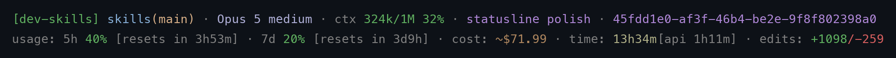

24 skills and 4 sub-agents for Claude Code — design, plan, implement, test, review, and release, each with a lite/full/ultra delivery mode.
/plugin marketplace add amjadjibon/skills
Skills compose end to end, or run standalone.
dev-loop
└─ dev-research → dev-design → dev-create-plan → dev-review-plan → dev-implement-plan → dev-qa → dev-code-review
(optional) (optional) ↑ │
└──── fix agents ─────────────────┘
dev-design's API axis → dev-api-design (+ openapi-spec for the spec doc)
dev-implement-plan phases → dev-tdd (test-first), dev-e2e-testing, dev-smoke-testing (on demand)24 behavior overlays, invoked via the Skill tool.
Investigate a codebase, approach, or technology before planning; writes RESEARCH.md with a recommendation.
Decide a feature's shape: system design, data model, API contract, and UI/UX. Writes DESIGN.md.
REST/GraphQL design principles: resource/URL design, pagination, versioning, GraphQL schema-first.
Builds a clickable UI prototype as one self-contained HTML file. Writes prototype.html.
Writes PLAN.md with phased, checkbox-driven steps ready for autonomous execution.
Reviews a PLAN.md before implementation for vague tasks, missing criteria, and scope issues.
Executes a PLAN.md, ticking checkboxes and committing each phase.
The red → green TDD loop: seams, anti-patterns, and the rules of the cycle.
Playwright end-to-end tests: what earns one, fixtures, and treating flake as a bug.
One-check-per-file sanity scripts run on demand — is the build alive, not a pipeline gate.
Measures test coverage, identifies untested paths, writes missing tests, produces QA.md.
Reviews a diff or branch for correctness, security, and simplification; writes REVIEW.md.
Orchestrates plan → implement → review autonomously, spawning parallel agents in worktrees.
Restructures code without changing behavior, applying changes in small verifiable steps.
Reproduce → isolate → fix → verify loop, committing the failing test before the fix.
Measure baseline → profile → optimize one bottleneck at a time → benchmark.
Removes merged branches, prunes stale refs, closes resolved issues, cleans worktrees.
Derives the version bump from conventional commits, generates a changelog, tags a release.
Writes and validates OpenAPI 3.1 spec documents — $ref components, Spectral/Redocly lint rules.
Generates Mermaid diagrams with high-contrast styling and syntax validation.
Creates and reviews GitHub Actions workflows, matrix builds, and security hardening.
Safety gate for destructive git ops, plus this repo's canonical commit hygiene.
Interactive ideation partner that pushes back instead of just agreeing.
Throwaway code in the real codebase to answer one design question — a driveable TUI, or UI variants on a real route.
Parallel workers the skills spawn, each in an isolated worktree.
Answers one scoped research question.
Implements one PLAN.md phase.
Fixes a group of REVIEW.md findings.
Writes coverage for one module's gaps.
Repo, model and context on one line; what the session has cost you on the next.

Line two names each group and brackets any figure that qualifies another, and each percentage shares one traffic light — green under 50%, yellow under 80%, red at 80% and above, in muted hues chosen for distinct colour rather than intensity. The rate-limit segments show how much of each window is spent and when it refills (usage: 5h 40% [resets in 3h53m]); there is no credit balance in the session payload, so those windows are the only real quota signal, and line two is ordered by urgency so a narrow pane drops the notional cost before them. Segments drop out when the data isn't there yet, so a fresh session shows just the first line — and again when the terminal is too narrow, so neither line ever wraps.
A SessionStart hook wires it into settings.json on the first session after install, because plugins can't declare a statusLine themselves. It never overwrites a status line you already had, never replaces a refreshInterval you chose, and if you delete the one it installed it stays gone — each guarantee has a test. Opt out up front with touch ~/.claude/.dev-skills.statusline-optout.